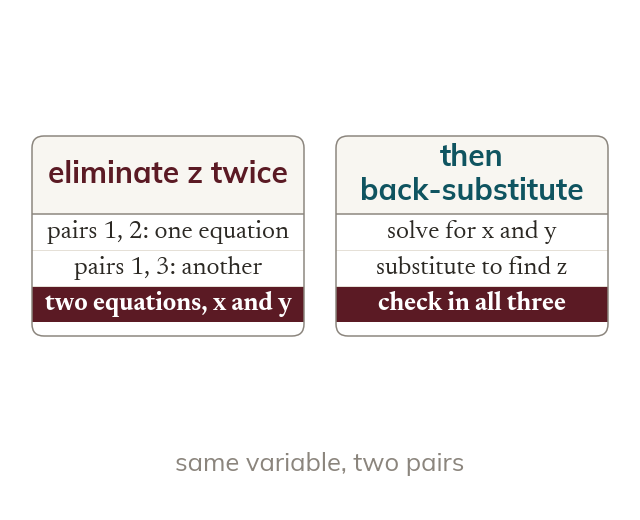

The plan
One variable is eliminated twice, from two different pairs. That leaves two equations in the other two unknowns. Solving those, then substituting back, finds the third.
Pick one variable and eliminate it twice, from two different pairs of equations, to get two equations in the other two unknowns. Solve that pair, and then substitute back to find the third.